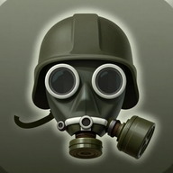
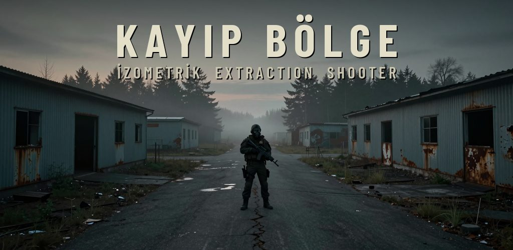
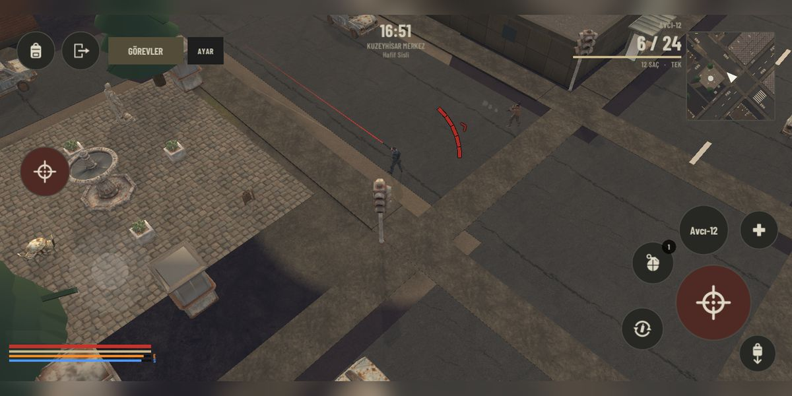
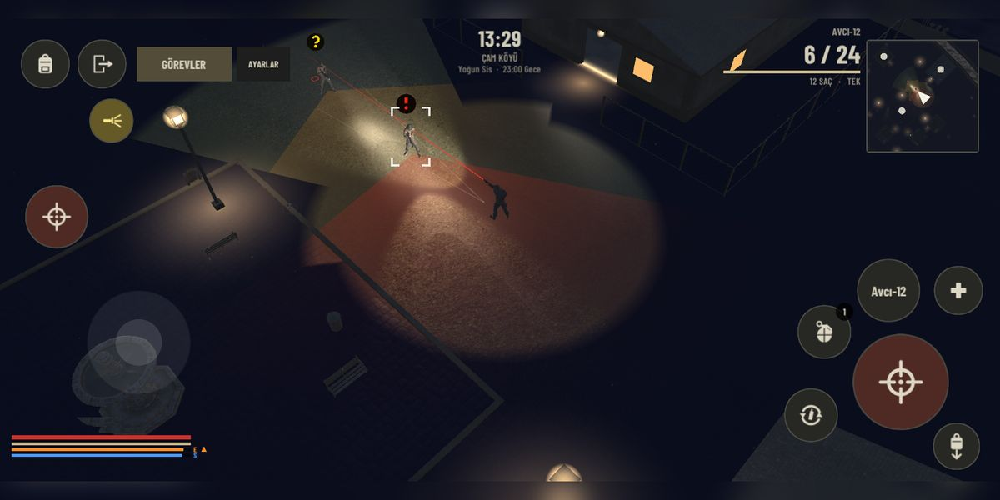
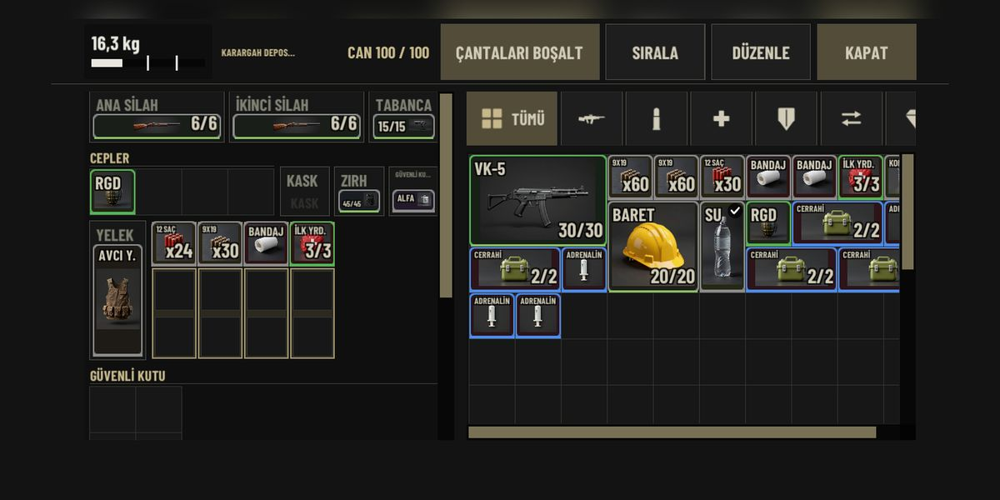
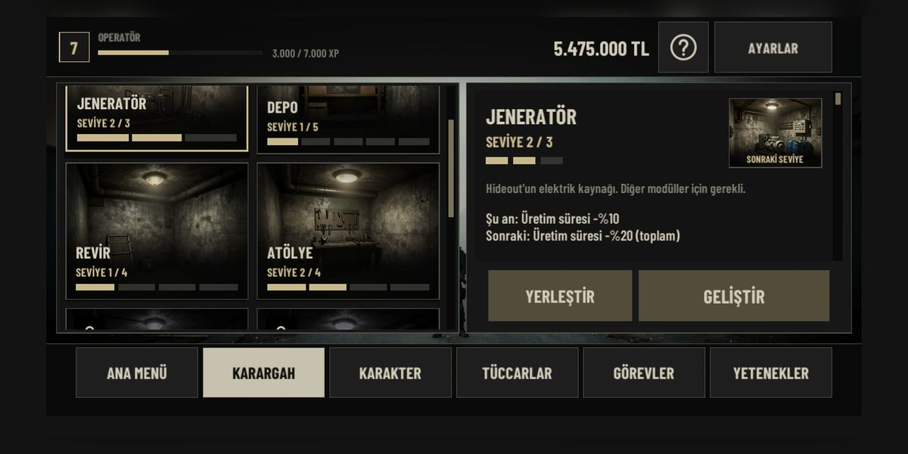

Kayıp Bölge

Ganimet topla, sağ çık.
Kayıp Bölge, telefon için yapılmış izometrik bir PvE extraction shooter oyunudur. Karantina altındaki bölgelere baskına çık, kasaları ara, düşmanlarla çatış ve en önemlisi: sağ çıkış noktasına ulaş. Öldüğünde güvenli kutun dışındaki her şeyi kaybedersin.
- Tamamen çevrimdışı, tek oyunculu; hesap ya da internet gerekmez.
- Gerçekçi yaralanma: kanama, kırık uzuvlar, açlık, susuzluk, taşıma ağırlığı.
- Zırh sınıfı ve mermi delme gücü; ızgara tabanlı envanter ve güvenli kutu.
- Birden çok harita, gündüz-gece ve hava durumu; haydutlar, paralı askerler ve boss'lar.
- Dört tüccar, görevler ve geliştirilebilir karargah.
- Telefon için yatay dokunmatik kontroller.
Oyun silahlı şiddet içerir; 18 yaş ve üzeri için önerilir. İsteğe bağlı ödüllü reklam içerir.




Loot, fight, make it out alive.
Kayıp Bölge ("Lost Zone") is an isometric PvE extraction shooter made for phones. Raid quarantined zones, search crates, fight past hostile patrols and, above all, reach an extraction point alive. If you die, you lose everything except what is inside your secure container.
- Fully offline single-player; no account or internet connection required.
- Realistic injuries: bleeding, fractures, hunger, thirst, carry weight.
- Armor classes and ammo penetration; grid inventory and secure container.
- Multiple maps, day-night cycle and weather; bandits, mercenaries and bosses.
- Four traders, quests and an upgradable hideout.
- Landscape touch controls designed for phones.
Contains armed violence; recommended for ages 18+. Contains optional rewarded ads.